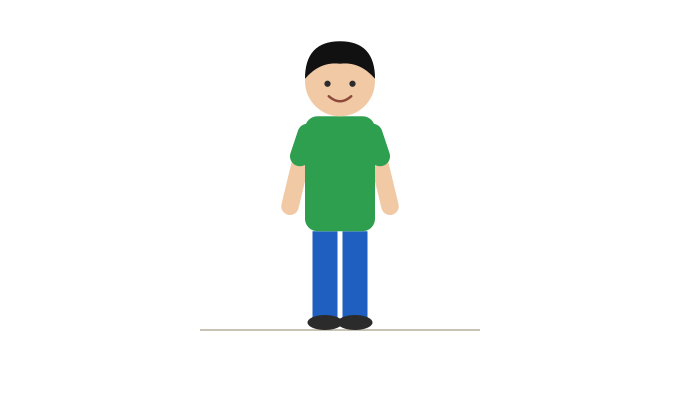
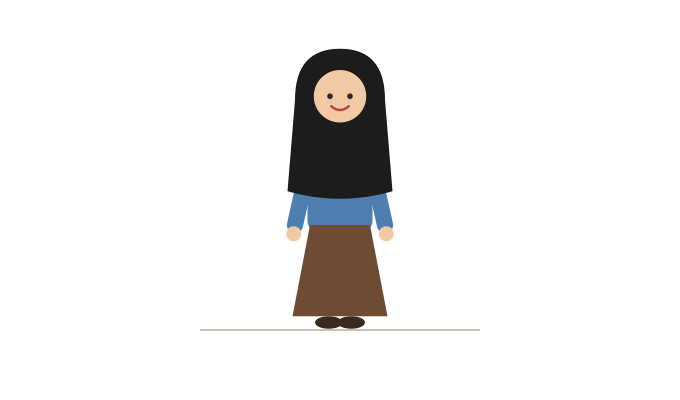
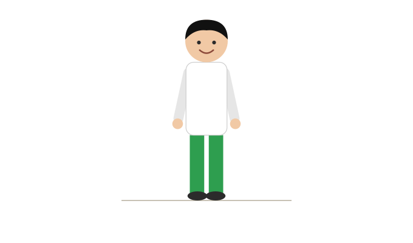

ちち chichi
みどりの Midori no ティーシャツの tii-shatsu no ひとは hito wa ちちです。 chichi desu.
しんせつです。 Shinsetsu desu. きびしいです。 Kibishii desu.
しゅうまつ、 Shūmatsu, ちちは chichi wa よく yoku はたらきます。 hatarakimasu.
これは Kore wa わたしの watashi no かぞくです。 kazoku desu.
わたしの Watashi no かぞくは kazoku wa よにんです。 yonin desu.
わたしと Watashi to ちちと chichi to ははと haha to おとうとです。 otouto desu.
わたしは Watashi wa ふたり futari きょうだいです。 kyōdai desu.
おとうとは Otouto wa ひとりです。 hitori desu.
わたしは Watashi wa いちばんめです。 ichibanme desu.
わたしは Watashi wa いちばん ichiban うえです。 ue desu.
Geser ke samping untuk melihat seluruh bagan →

みどりの Midori no ティーシャツの tii-shatsu no ひとは hito wa ちちです。 chichi desu.
しんせつです。 Shinsetsu desu. きびしいです。 Kibishii desu.
しゅうまつ、 Shūmatsu, ちちは chichi wa よく yoku はたらきます。 hatarakimasu.

ちゃいろい Chairoi スカートの sukaato no ひとは hito wa ははです。 haha desu.
あたたかいです。 Atatakai desu. やさしいです。 Yasashii desu.
しゅうまつ、 Shūmatsu, ははは haha wa さんぽを sanpo o します。 shimasu.
あかい Akai ジャケットの jaketto no ひとは hito wa わたしです。 watashi desu.
おとなしいです。 Otonashii desu.
しゅうまつ、 Shūmatsu, わたしは watashi wa たいてい taitei たくさん takusan ねます。 nemasu.

しろい Shiroi ふくの fuku no ひとは hito wa おとうとです。 otouto desu.
あかるいです。 Akarui desu. げんきです。 Genki desu.
しゅうまつ、 Shūmatsu, おとうとは otouto wa よく yoku ともだちと tomodachi to つりに tsuri ni いきます。 ikimasu.